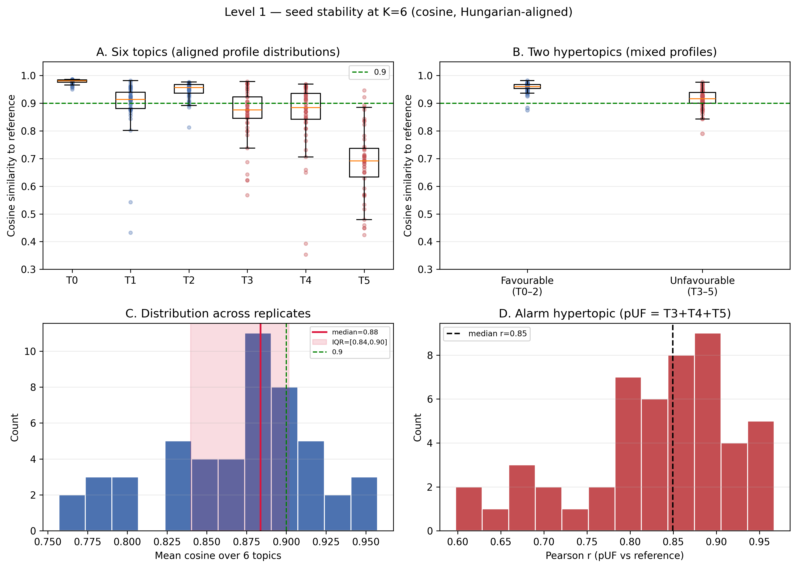
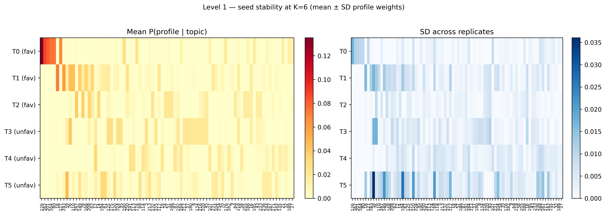
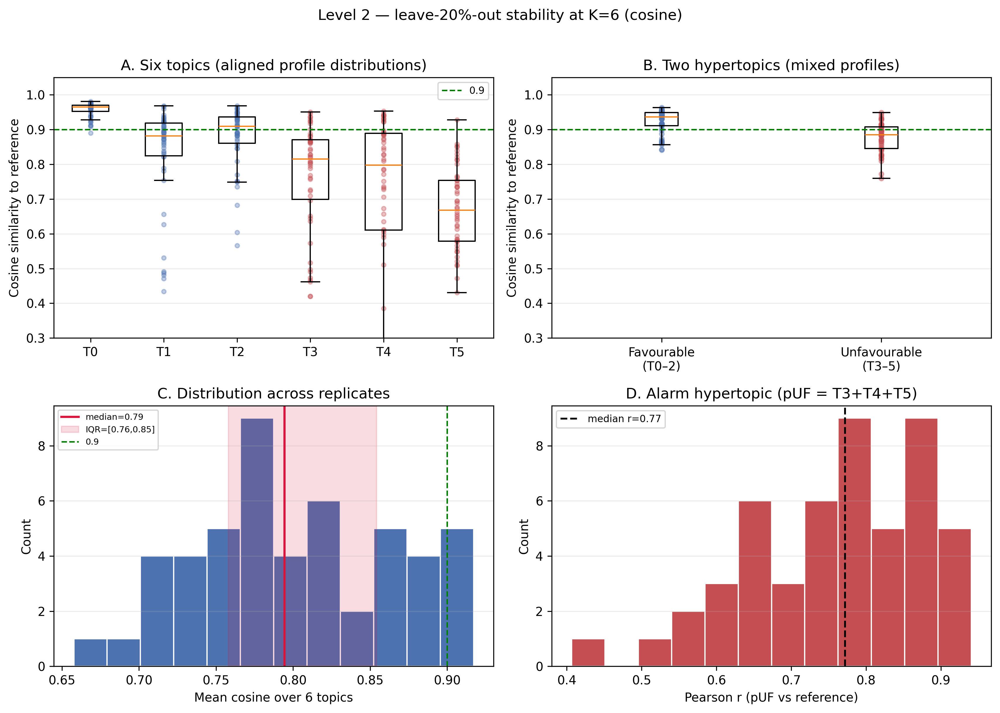
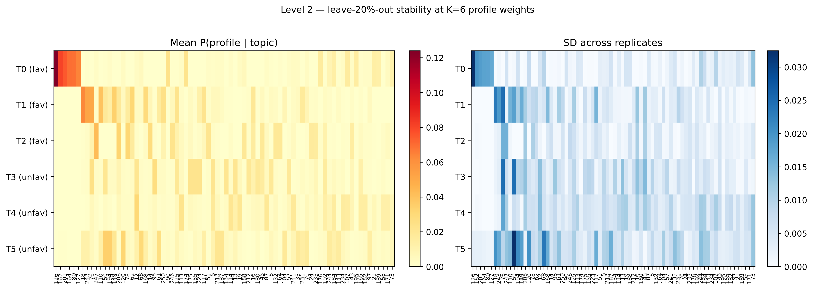

Same protocol as results/lda/stability/, with day-type sequences from
data/revision/user_embeddings_revision_a0.csv. Reference model unchanged
(LDA_model_vdec25.gensim). Settings: K=6, 50 reps, 100 passes, leave-out 20%.
Of 175 patients, 95 have different day-type sequences vs the prior embeddings; mean sequence length +2.5 tokens. Baseline folder was not overwritten.
| Metric | Prior | Revision | Δ |
|---|---|---|---|
| L1 median cosine (all topic–rep) | 0.912 | 0.915 | +0.003 |
| L1 median of mean cosine / rep | 0.883 | 0.884 | +0.000 |
| L1 favourable hypertopic cosine | 0.960 | 0.960 | +0.000 |
| L1 unfavourable hypertopic cosine | 0.919 | 0.916 | -0.003 |
| L1 pUF Pearson r | 0.839 | 0.849 | +0.010 |
| L2 median cosine (all topic–rep) | 0.867 | 0.867 | -0.000 |
| L2 median of mean cosine / rep | 0.797 | 0.794 | -0.002 |
| L2 favourable hypertopic cosine | 0.933 | 0.937 | +0.003 |
| L2 unfavourable hypertopic cosine | 0.896 | 0.885 | -0.011 |
| L2 pUF Pearson r | 0.754 | 0.772 | +0.018 |
| Topic | Prior | Revision | Δ |
|---|---|---|---|
| T0 | 0.981 | 0.981 | +0.000 |
| T1 | 0.914 | 0.914 | +0.000 |
| T2 | 0.958 | 0.957 | -0.001 |
| T3 | 0.871 | 0.875 | +0.005 |
| T4 | 0.883 | 0.884 | +0.002 |
| T5 | 0.695 | 0.691 | -0.003 |
| Topic | Prior | Revision | Δ |
|---|---|---|---|
| T0 | 0.963 | 0.965 | +0.002 |
| T1 | 0.885 | 0.882 | -0.003 |
| T2 | 0.894 | 0.909 | +0.015 |
| T3 | 0.808 | 0.815 | +0.007 |
| T4 | 0.798 | 0.797 | -0.001 |
| T5 | 0.671 | 0.668 | -0.004 |



